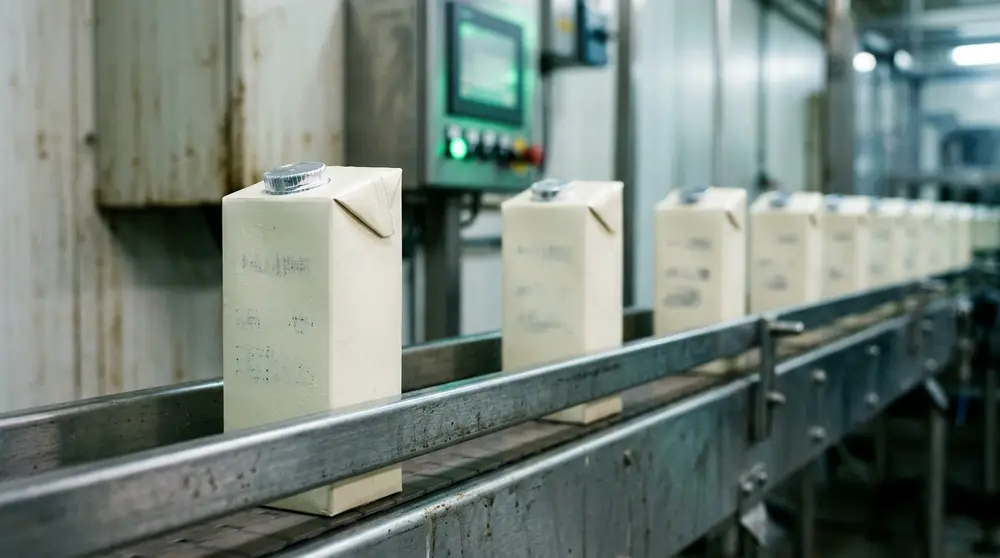
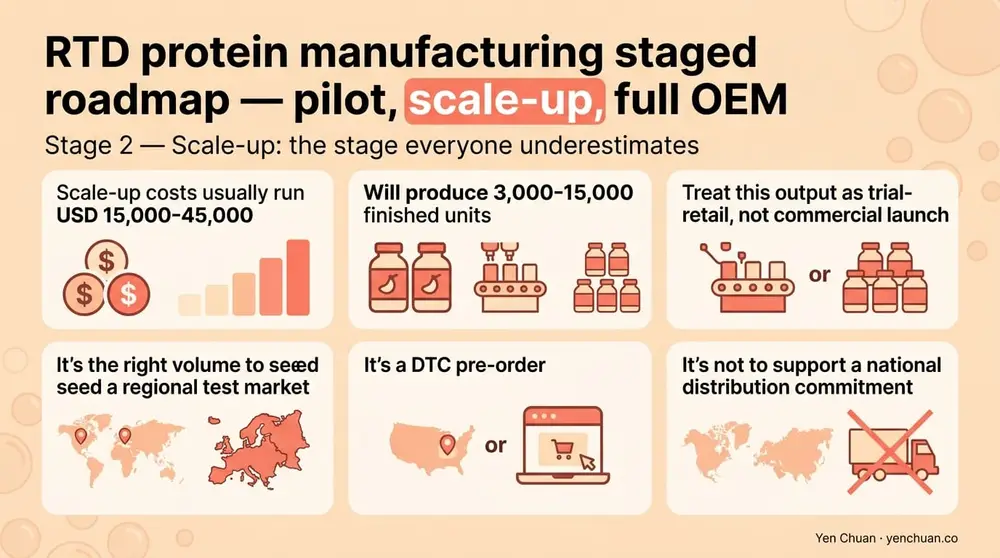
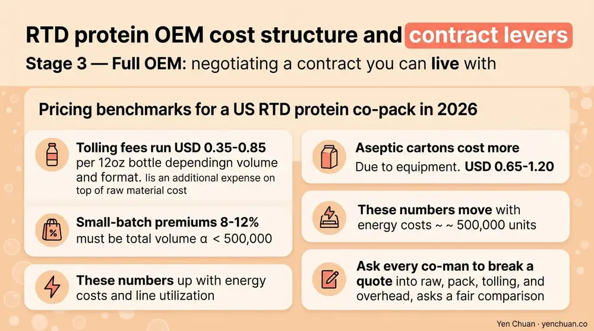

文章 / 經營與採購
RTD Protein Manufacturing: Pilot to Full-Scale OEM
這篇是英文原文，尚未完成繁體中文翻譯。中文選單與相關商品連結不會切回英文介面。

查看英文原文（尚未翻譯）
US ready-to-drink protein sales crossed USD 7.2 billion in 2024 and are projected to double by 2030, pulling new brand entrants from every adjacent category — sports nutrition, plant-based dairy, functional coffee, and boba. Every week we take discovery calls from founders who've perfected a protein shake in their kitchen and now need to make 20,000 bottles of it. The answer is almost never "here's one quote for 20,000 bottles." It's a staged process from pilot batch through scale-up to full OEM, and each stage has its own economics, timeline, and failure modes. This guide walks through what actually happens in that sequence and what to negotiate at each step.
Why RTD protein is the category with the widest gap between "recipe" and "product"
Grand View Research puts the global protein beverage market at USD 28.6 billion in 2024 with the US accounting for 37% of value and the fastest growth. Within that, RTD formats — bottles, cans, aseptic cartons — are outgrowing powders by 3 to 1, driven by convenience positioning and grab-and-go retail expansion. The catch: RTD protein is one of the most technically demanding beverage formats on the market. Protein denatures under heat, precipitates under acid, foams under agitation, and separates on the shelf. A formula that tastes great in a shaker at home can fail every one of those tests the first time it meets a pilot line.
For a founder, that gap translates into a manufacturing roadmap of roughly three stages: pilot (50-500L), scale-up (1,000-5,000L), and full production (10,000L+). Each stage exists to burn down a different class of risk — formula, process, and commercial — before committing the capital to a full retail launch.
Stage 1 — Pilot batch: proving the formula survives a real process
A pilot batch is the first time your formula runs on equipment that resembles, even loosely, the line it will eventually scale to. Volumes are typically 50-500 liters, producing 150-1,500 bottles depending on size. The goal is not to make inventory for sale — it's to prove four things:
- The formula survives pasteurization (HTST at 72°C/15s, UHT at 138°C/4s, or retort for shelf-stable) without visual, flavor, or texture loss.
- Viscosity and sedimentation stay within spec across a 90-day accelerated stability test at 40°C.
- Label claims (protein content, calories, allergens) hold lot-to-lot within tolerance.
- The target cost structure is achievable at scale.
Pilot runs cost USD 3,000-12,000 depending on format and complexity. Expect 4-8 weeks from signed scope to a pilot bottle in your hand. Budget for 2-3 pilot iterations — first-pass formulas almost always need a stabilizer adjustment or a pasteurization window change.
Stage 2 — Scale-up: the stage everyone underestimates
Between pilot (500L) and full production (10,000L+) sits the scale-up batch at 1,000-5,000L. This stage is where most protein RTD launches stumble, because heat transfer, shear, and hold times all change with tank geometry. A formula that finished pasteurization in 45 seconds on a 200L plate heat exchanger may see 90 seconds of effective exposure on a larger unit — long enough to denature whey proteins that were stable on the pilot.
What to lock down at scale-up:
- Final HTP (High Temperature Processing) profile: exact temperature, hold time, and cooling curve, documented for the production line.
- Homogenization pressure: typically 150-200 bar for RTD protein, higher for cream-based formulas. Bench at multiple pressures to pick the one that gives stable emulsion without excessive shear-induced protein unfolding.
- Fill temperature and headspace gas: cold-fill vs hot-fill, nitrogen vs air, affects shelf life and packaging choice.
- Pack test with actual final packaging: glass, PET, aluminum, and aseptic carton each change oxygen barrier and light transmission, which matter for protein oxidation.
Scale-up costs usually run USD 15,000-45,000 and produce 3,000-15,000 finished units. Treat this output as trial-retail, not commercial launch — it's the right volume to seed a regional test market or a DTC pre-order but not to support a national distribution commitment.

Stage 3 — Full OEM: negotiating a contract you can live with
Once the formula and process are locked, you move to full OEM (Original Equipment Manufacturer) or co-manufacturing contracts. For RTD protein, the commercial structure has five levers worth negotiating hard on:
| Lever | What to ask for | Why it matters |
|---|---|---|
| MOQ per SKU per run | 10,000-30,000 units for beverages, lower for new brands | Too-high MOQ ties up cash in inventory |
| Run frequency | Monthly or quarterly, not annual | Shorter runs = fresher product on shelf |
| Ingredient ownership | You own or co-spec raw materials | Controls your cost and IP |
| Packaging ownership | You buy labels and caps direct | Protects against manufacturer markup |
| Exit terms | 90-day formula handover if you move production | Prevents lock-in |
Good co-manufacturers will agree to most of these. A co-man that insists on owning your formula or your raw materials is flagging a lock-in strategy — walk.
Pricing benchmarks for US RTD protein co-pack in 2026: tolling fees run USD 0.35-0.85 per 12oz bottle depending on volume and format, on top of raw material cost. Aseptic cartons cost more (USD 0.65-1.20) due to equipment access constraints. Add 8-12% for small-batch premium if your total annual volume is under 500,000 units. These numbers move with energy costs and line utilization — ask every co-man to break the quote into raw, pack, tolling, and overhead so you can compare fairly.

Formula and process choices that affect manufacturability
Not every protein RTD recipe is equally easy to make. Choices made at the formula bench directly shape what stage 2 and stage 3 cost and how fast they move:
Protein type: Whey protein isolate scales cleaner than concentrate because it carries less lactose and lipid, both of which can interact with heat. Dairy-protein RTDs are generally 2-3x easier to scale than plant-protein RTDs, which require more stabilization and masking. Milk protein concentrate sits in the middle — excellent mouthfeel but tight process windows.
pH zone: Neutral pH (6.7-7.0) and acidic pH (3.5-4.2) are both workable. The danger zone is 4.6-6.0, where protein solubility drops sharply and heat treatments trigger aggregation. Avoid it.
Shelf stability target: Aseptic and retort-stable cartons reach 12-18 month ambient shelf life but require higher heat load and specialized lines. HTST-pasteurized RTDs in PET hold 60-90 days refrigerated and run on widely available equipment. Choose format early — you cannot switch downstream without redoing scale-up.
Stabilizer system: A good RTD protein stabilizer blend typically combines carrageenan (0.02-0.05%), gellan gum (0.02-0.04%), and microcrystalline cellulose (0.1-0.2%). Work with a supplier who has actual RTD experience — not a distributor reading from a hydrocolloid chart.
Where Taiwan and Asian co-manufacturing fit
Many US and EU brands still go to domestic co-packers because of freight and freshness math, but Asian co-manufacturing has become competitive for shelf-stable RTD formats and for brands with Asia as a meaningful secondary market. A Taiwan- or Vietnam-based OEM offers three advantages: lower tolling cost (typically 20-35% under US rates), faster turnaround on new SKUs, and direct access to the Asian dairy and functional-ingredient supply chain. The trade-offs are 30-45 days of ocean freight and tighter FDA FSVP documentation requirements. Brands running hybrid models often produce core SKUs domestically and limited-edition or Asia-market SKUs overseas.
For founders evaluating Asian partners, the same vetting process that applies to bubble tea ingredient sourcing applies here — factory audits, COA review, export references. Our Taiwan vs China vs Southeast Asia sourcing guide covers the comparison for ingredient sourcing, and most of it maps cleanly onto co-man selection. Handling co-packer logistics is covered in our milk tea supplier guide.
Sources
- Grand View Research — Protein-Based Beverages Market
- Mordor Intelligence — RTD Protein Drinks Market
- IFT — Food Processing and Stability Research
- Beverage Industry — RTD Category Trends
- Institute of Food Technologists — Dairy Protein Heat Stability
About Yen Chuan
Yen Chuan has been at the heart of Taiwan's bubble tea industry for over 20 years, supplying premium powders, syrups, tapioca pearls, and tea leaves to thousands of boba shops worldwide. With an in-house R&D lab and a commitment to quality ingredients, Yen Chuan is more than a supplier — we're your partner in the boba business. Our R&D lab and pilot facility have supported protein RTD and boba-adjacent RTD projects for brands across Asia, North America, and the Gulf, including aseptic carton, PET bottle, and can formats for both neutral and acidic protein systems.
Move from kitchen recipe to retail shelf
Ready to pilot your protein RTD line? Explore our OEM and co-pack services or browse the ingredient catalog — our team has run protein beverages through pilot, scale-up, and full production for brands from Taipei to Los Angeles.
Frequently Asked Questions
Q: How much does it cost to develop a ready-to-drink protein product?
A: A realistic budget from pilot to full launch runs USD 50,000-150,000 for formula, pilot batches, scale-up, regulatory work, and first production run. Pilot batches alone are USD 3,000-12,000, scale-up USD 15,000-45,000, and full OEM adds tolling fees of USD 0.35-0.85 per 12oz bottle. Plant-protein and aseptic formats cost more than dairy-whey PET formats.
Q: What's the MOQ for RTD protein co-manufacturing?
A: Typical MOQ per SKU per run is 10,000-30,000 units for bottled RTD, and 25,000-50,000 units for aseptic cartons due to line changeover economics. New brands can sometimes negotiate 5,000-unit trial runs at a 10-15% tolling premium. Annual volume commitments over 500,000 units unlock substantially better per-unit pricing.
Q: Should I manufacture my protein drink in the US or Asia?
A: US co-manufacturing makes sense for fresh refrigerated formats, regional launches, and brands where freshness and freight math favor local production. Asian co-manufacturing is competitive for shelf-stable formats, brands selling in Asian markets, and founders needing 20-35% lower tolling. Many brands run hybrid — core SKUs domestic, extensions overseas.
Q: What pasteurization method should I use for protein RTD?
A: HTST pasteurization (72°C for 15 seconds) yields 60-90 day refrigerated shelf life and the cleanest protein flavor — best for most fresh-format launches. UHT (138°C for 4 seconds) and aseptic packaging reach 12-18 month ambient shelf life but require higher heat load. Retort works for cans and delivers up to 24 months ambient but drives the strongest protein off-notes.
Q: How long does it take to launch a new RTD protein product?
A: Fast-track projects land in 6-9 months from concept to first retail shelf; typical timelines run 9-14 months. Bench formula development takes 8-12 weeks, pilot and scale-up another 12-16 weeks, regulatory and label approvals 6-10 weeks, and first production run 4-8 weeks. Plant-protein, aseptic, or retort formats add 2-4 months for extra process validation.